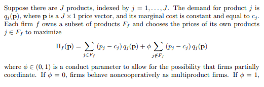

formulas
The Mathematical Model
best explanation of how the betrand model works is written by Jonas Björnerstedt (Swedish competition authority) and Frank Verboven (University of Leuven) in their merger simulation implementation in stata.
The next few images are just section 2 of their paper:



Logit demand function
Their are \(j\) products, indexed by \(j = 1, ...,J\) . The demand for product \(j\) is \(q_j(\mathbf{p})\). \(\mathbf{p}\) is a \(J X 1\) price vector and the costs of producing the the product is \(c_j\). Each firm \(f\) owns a subset of products \(F_f\) and chooses its own prices to maximize
\[ \Pi_f(\mathbf{p}) = \sum_{j \in F_f}(p_j -c_j)q_j (\mathbf{p}) + \sum_{j \notin F_f}(p_j -c_j )q_j(\mathbf{p}) \]
A Bertrand- Nash equilibrium equilibrium is defined by the system of first order conditions:
\[ q_j(\mathbf{p}) + \sum_{k \in F_f}(p_k - c_k) \frac{\partial q_k(\mathbf{p})}{\partial p_j} + q_j(\mathbf{p}) + \sum_{k \notin F_f}(p_k - c_k) \frac{\partial q_k(\mathbf{p})}{\partial p_j}, j = 1, ...,J \]
define \(\theta\) to by a \(JXJ\) product ownership matrix with \(\theta(j,k) =1\) if products \(j\) and \(k\) are owned by the same firm and \(0\) otherwise. let \(q(\mathbf{p})\) be the demand vector,
\(\Delta\mathbf{p} ==\frac{\partial q(\mathbf{p})}{\partial p^d}\)
be the \(jxj\) Jacobian of first derivatives and c be the jX1 marginal cost vectr we can write is vector notation as:
Firm \(k \in K\) chooses the prices \(\{p_i\}_{i=1}^{n_k}\) of its products so as to maximize profits. Mathematically, firm \(k\) solves:
\[\begin{align*} \max_{\{p_i\}_{i=1}^{n_k}} &\sum_{i=1}^{n_k}(\omega_{ik})(p_i - c_i)q_i, \end{align*}\]where \(\omega_{ik}\) is the share of product \(i\)’s profits earned by firm \(k\), so that \(\sum\limits_{k\in K} \omega_{ik}\le 1\). \(q_i\), the quantity sold of product \(i\), is assumed to be a twice differentiable function of all product prices.
Differentiating profits with respect to each \(p_i\) yields the following first order conditions (FOCs):
\[\begin{align*} \partial p_i&\equiv \omega_{ik}q_i +\sum_{j=1}^{n}\omega_{jk}( p_j - c_j)\frac{\partial q_j}{\partial p_i}=0& \mbox{ for all $i\in n_k$} \end{align*}\]which may be rewritten as
\[\begin{align*} \partial p_i&\equiv \omega_{ik}r_i + \sum_{j=1}^{n} \omega_{jk}r_jm_j\epsilon_{ji}=0& \mbox{ for all $i\in n_k$}, \end{align*}\]where \(r_i\equiv\frac{p_iq_i}{\sum\limits_{j=1}^np_jq_j}\) is product \(i\)’s revenue share, \(m_i\equiv\frac{p_i-c_i}{p_i}\) is product \(i\)’s gross margin, and \(\epsilon_{ij}\equiv\frac{\partial q_i}{\partial p_j}\frac{p_j}{q_i}\) is the elasticity of product \(i\) with respect to the price of product \(j\).
The FOCs for all products may be stacked and then represented using the following matrix notation: \[\begin{align*} (r\circ diag(\Omega)) + (E\circ\Omega)'(r \circ m)=0 (\#eq:FOC1) \end{align*}\]
rearranging yields
\[\begin{align*} m_{Bertrand}= -\{(E\circ\Omega)'^{-1}(r\circ diag(\Omega))\} \circ \frac{1}{r} (\#eq:FOC2) \end{align*}\]where \(r\) and \(m\) are \(n\)-length vectors of revenue shares and margins, \(E = \left(\begin{smallmatrix} \epsilon_{11}&\ldots&\epsilon_{1n}\\\vdots &\ddots&\vdots\\\epsilon_{n1}&\ldots&\epsilon_{nn} \end{smallmatrix}\right)\) is a \(n \times n\) matrix of own- and cross-price elasticities, and \(\Omega=\left(\begin{smallmatrix} \omega_{11}&\ldots&\omega_{1n}\\\vdots &\ddots&\vdots\\\omega_{n1}&\ldots&\omega_{nn} \end{smallmatrix}\right)\) is an \(n \times n\) matrix whose \(i,j\)th element equals the share of product \(j\)’s profits owned by the firm setting product \(i\)’s price.1 In many cases, product \(i\) and \(j\) are wholly owned by a single firm, in which cases the \(i,j\)th element of \(\Omega\) equals 1 if \(i\) and \(j\) are owned by the same firm and 0 otherwise. Under partial ownership, the columns of the matrix formed from the unique rows of \(\Omega\) must sum to 1. ‘\(diag\)’ returns the diagonal of a square matrix and ‘\(\circ\)’ is the Hadamard (entry-wise) product operator.
The solution to system @ref(eq:FOC1) yields equilibrium prices conditional on the ownership structure \(\Omega\). A (partial) merger is modeled as the solution to system @ref(eq:FOC1) where \(\Omega\) is changed to reflect the change in ownership.
logit
Logit demand is based on a discrete choice model that assumes that each consumer is willing to purchase at most a single unit of one product from the \(n\) products available in the market. The assumptions underlying Logit demand imply that the probability that a consumer purchases product \(i \in n\) is given by
\[\begin{align*} s_i=& \frac{\exp(V_i)}{\sum\limits_{k \in n}\exp(V_k)},& \end{align*}\]where \(s_i\) is product \(i\)’s quantity share and \(V_i\) is the (average) indirect utility that a consumer receives from purchasing product \(i\). We assume that \(V_i\) takes on the following form
\[\begin{align*} V_i=&\delta_i + \alpha p_i,&\alpha<0. \end{align*}\]The Logit demand system yields the following own- and cross-price elasticities:
\[\begin{align*} \epsilon_{ii}=&\alpha (1-s_i)p_i \\ \epsilon_{ij}=&-\alpha s_jp_j \end{align*}\]nested
By construction, Logit demand assumes that diversion occurs according to quantity share. While convenient, one potential drawback of this assumption is that diversion according to share may not accurately represent consumer substitution patterns. One way to relax this assumption is to group the \(n\) products into \(n > H \ge 2\) nests, with products in the same nest assumed to be closer substitutes than products in different nests.2 logit.nests‘s ’nests’ argument may be used to specify a length-\(n\) vector identifying which nest each product belongs to.
The assumptions underlying nested Logit demand imply that the probability that a consumer purchases product \(i\) in nest \(h\in H\) is given by
\[\begin{align*} s_i=& s_{i|h}s_h,&\\ s_{i|h}=&\frac{\exp(\frac{V_i}{\sigma_h})}{\sum\limits_{k \in h}\exp(\frac{V_k}{\sigma_h})},& 1 \ge \sigma_h \ge 0\\ s_{h}=& \frac{\exp(\sigma_hI_h)}{\sum\limits_{l\in H}\exp(\sigma_lI_l)},& I_h=\log\sum\limits_{k \in h}\exp\left(\frac{V_k}{\sigma_h}\right). \end{align*}\]We assume that \(V_i\) takes on the following form
\[\begin{align*} V_i=&\delta_i + \alpha p_i,& \alpha\le 0. \end{align*}\]The Nested Logit demand system yields the following own- and cross-price elasticities:
\[\begin{align*} \epsilon_{ii}=& [1-s_i + (\frac{1}{\sigma_h}-1)(1-s_{i|h})]\alpha p_i, \\ \epsilon_{ij}=&\begin{cases} -[s_j + (\frac{1}{\sigma_h}-1)s_{j|h}]\alpha p_j, & \text{if $i,j$ are both in nest $h$}.\\ -\alpha s_jp_j, & \text{if $i$ is not in nest $h$ but $j$ is}. \end{cases} \end{align*}\]Notice how these cross-price elasticities are identical to the non-nested Logit elasticities when products \(i,j\) are in different nests, but are larger when products \(i,j\) are in the same nests. This observation is consistent with the claim that products within a nest are closer substitutes than products outside of a nest.
In contrast to nested LA-AIDS, which must calibrate \(\frac{H(H-1)}{2}\) nesting parameters, only \(H\) nesting parameters must be calibrated. By default, calcSlopes constrains all the nesting parameters to be equal to one another, \(\sigma_h=\sigma\) for all \(h\in H\). This reduces the number of parameters that need to be estimated to \(n+2\) (\(n\) \(\delta\)s, \(\alpha,\sigma\)) which means users must furnish enough margin information to complete at least two FOCs. Setting logit.nests‘s ’constraint’ argument to FALSE causes the calcSlopes method to relax the constraint and calibrate a separate nesting parameter for each nest. Relaxing the constraint increases the number of parameters that must be estimated to \(n+H+1\), which means that users must furnish margin information sufficient to complete at least \(H+1\) FOCs. Moreover, users must supply at least one margin per nest for each non-singleton nest. In other words, if nest \(h\in H\) contains \(n_h>1\) products, then at least one product margin from nest \(h\) must be supplied.
Footnotes
The Bertrand model assumes that while any firm can receive a portion of another firm’s profits (e.g. through owning a share of that firms’ assets), only one firm can set a product’s price.↩︎
No function in
antitrustcurrently permits a hierarchy of nests. Singleton nests (nests containing only a single product) are technically permitted, but their nesting parameter is not identified and is therefore normalized to 1.↩︎